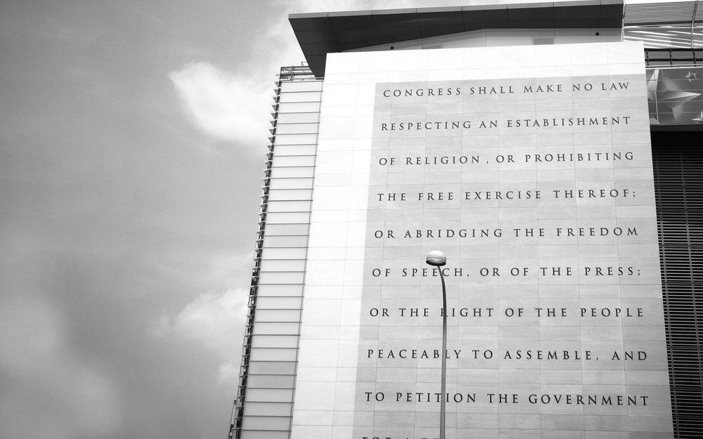

    <!-- About Section Start -->
    <div id="about-us">
        <div class="container">
           <h3>About us</h3>
            <div class="row" style="margin-right: 0; margin-left: 0;" data-aos="fade-up" data-aos-delay="300">
                <div>
                 
                 <p>The Quad is a project of the <a href="http://freedomforuminstitute.org/first-amendment-center">First Amendment Center of the Freedom Forum Institute</a>, a neutral, non-partisan, non-profit organization that aims to educate Americans about how their First Amendment rights work, how they may be at risk, and how they can be protected.  The research used to create the directory was conducted in partnership with the <a href="https://www.forsmarshgroup.com/">Fors Marsh Group</a>. The Quad was made possible by the <a href="https://knightfoundation.org/">John S. and James L. Knight Foundation</a> and supported by the <a href="https://www.charleskochfoundation.org/">Charles Koch Foundation</a>.<br><br>
                The First Amendment Center of the Freedom Forum Institute was founed in 1991 by John Siegenthaler, with the mission of creating national discussion, dialogue and debate about First Amendment rights and values.  The First Amendment Center has offices at the Newseum in Washington, D.C. and at Vanderbilt University in Nashville, Tennessee. <br><br>
           The Freedom Forum foundation is the creator and principal funder of the Newseum, in Washington, D.C., the Freedom Forum Institute and its First Amendment Center.                   </p>
                </div>
             </div>
        </div>
    </div>
    <!-- About Section End -->
   
